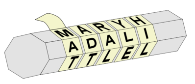

Шифр перестановки
Шифр одинарной перестановки
Что такое шифр перестановки?
Шифр перестано́вки — это метод симметричного шифрования, в котором элементы исходного открытого текста меняют местами. Элементами текста могут быть отдельные символы (самый распространённый случай), пары букв, тройки букв, комбинирование этих случаев и так далее. Типичными примерами перестановки являются анаграммы. В классической криптографии шифры перестановки можно разделить на два класса: Шифры одинарной (простой) перестановки — при шифровании символы открытого текста перемещаются с исходных позиций в новые один раз. Шифры множественной (сложной) перестановки — при шифровании символы открытого текста перемещаются с исходных позиций в новые несколько раз.
Как это выглядит?
Скитала — инструмент, используемый для осуществления перестановочного шифрования, в криптографии известный также как шифр Древней Спарты. Представляет собой цилиндр и узкую полоску пергамента, на которой писалось сообщение, обматывавшуюся вокруг него по спирали.
Откуда появилось?
Точное время появления шифра перестановки не известно. Вполне возможно, что писцы в древности переставляли буквы в имени своего царя ради того, чтобы скрыть его подлинное имя или в ритуальных целях. Одно из древнейших известных нам шифровальных устройств — Скитала. Бесспорно известно, что скитала использовалась в войне Спарты против Афин в конце V века до н. э. Прародителем анаграммы считают поэта и грамматика Ликофрона, который жил в Древней Греции в III веке до н. э. Как сообщал византийский автор Иоанн Цец, из имени царя Птоломея он составил первую из известных нам анаграмм: Ptolemaios — Аро Melitos, что в переводе означает «из мёда», а из имени царицы Арсинои — как «Ion Eras» (фиалка Геры).
Суть простыми словами?
Мы переставляем буквы местами и записываем, в каком порядке ти буквы стояли до этого. Человек, получающий этот записанный порядок может расшифровать наше сообщение.
Алгоритмы шифрования
Перестановка букв
Мы переставляем буквы изначального слова местами, вместе с ними переставляя номера их позиций, в которых они стояли до этого. Зная, какая буква на какой позиции стояла до шифрования, мы можем с легкостью дешифровать.
Пример:
| Шаги | Описание | Изменения |
|---|---|---|
| 1 | Берем фразу, которую хотим закодировать | ПРИВЕТ |
| 2 | Записываем, какая буква на какой позиции стоит | 123456 |
| 3 | Переставляем буквы местами | РПЕВИТ |
| 4 | Цифры переставляем вместе с буквами на соответсвующие места | 215436 |
| 5 | Итог | РПЕВИТ |
Шифратор
Результат:
Зашифруйте сообщение чтобы увидеть результат
Дешифратор
Результат:
Дешифруйте сообщение чтобы увидеть результат